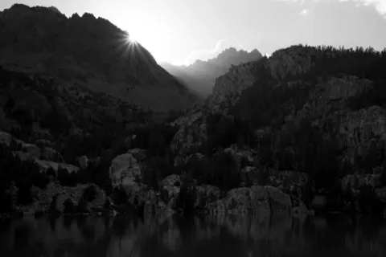
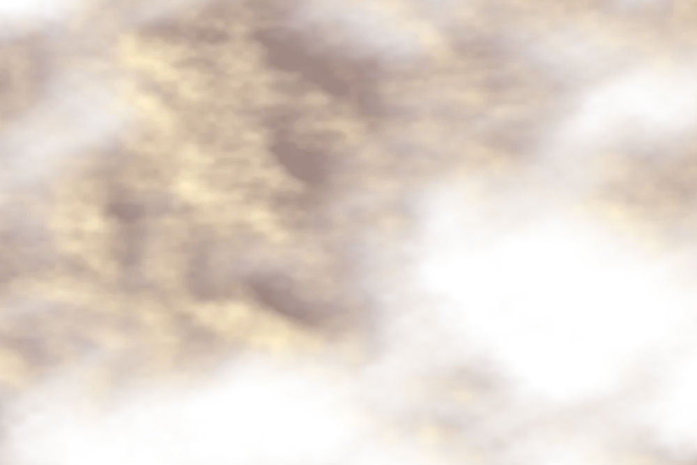
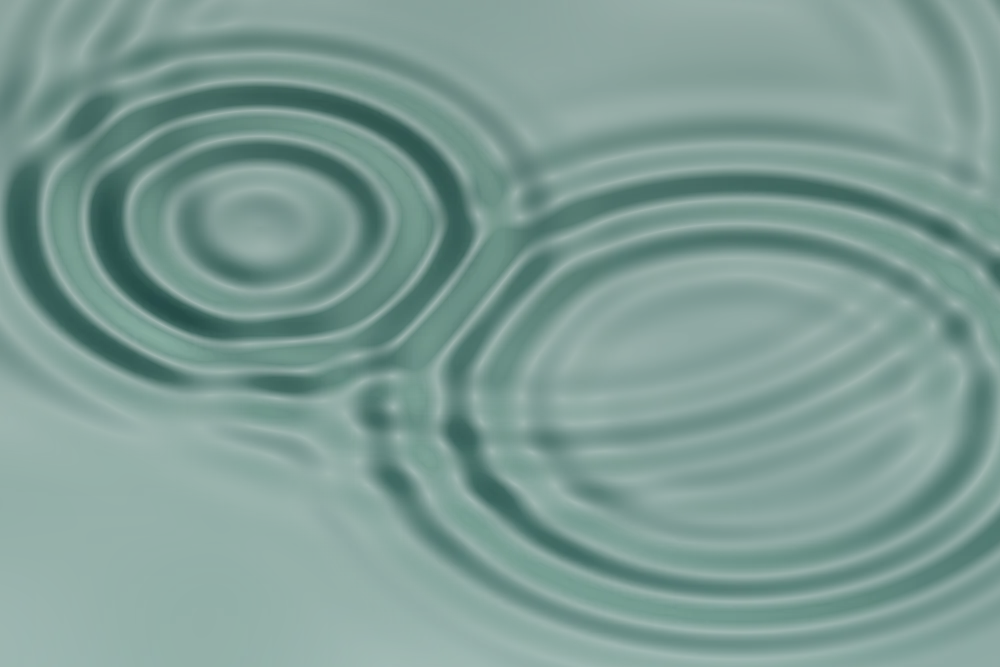
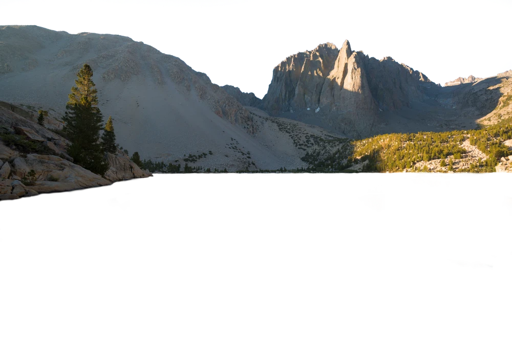

01 / the pitch
Agents with responsibilities.
Combining the best of declarative approaches, like SQL, with the reasoning power of AI. Describe the outcome, set the contract, let it run and self-correct.
· OpenProse.md
OpenProse × JHDesign · Spring 2026
OpenProse is a way to author outcomes. The approach is to contract the LLM rather than merely prompt it, using OpenProse structuring to define: requirements, maintenance, and strategies. Agents run, maintain, and review it on cadence.
In April 2026, Dan, the CEO of the newly funded OpenProse, hired JHDesign for a founding design project with two tracks of exploration: the brand, and the design of solutions for visualizing trace data from the RLM product.
The trace track is still confidential. This page is the brand and web-craft journey.
// json-verifier.prose.md · a whole service, one page name: json-verifier kind: service Description Validates generated JSON before a downstream system consumes it. Requires - `candidate_json`: JSON text to validate Ensures - `validation_report`: whether the JSON is valid, with parse errors and line references when validation fails Tools - `cli:jq`: JSON CLI available on PATH Strategies - when JSON validation fails, report the parse error and location without rewriting the input
Communicating quality and stability with useful elegance in a growing sea of noise.
Combining the best of declarative approaches, like SQL, with the reasoning power of AI. Describe the outcome, set the contract, let it run and self-correct.
AI power users, investors, CTOs, senior engineers. Each holds a different question, from "is this real?" to "can we trust it in production?"
No hype. Show the work: real outputs, real numbers. Technical depth when asked, accessible by default. Confident but not loud.
Reviewing dozens of live experiments needed more than a folder. I've been a designer for about 10 solid years now; from Adobe XD to Figma, I've been there.
For this project I got to debut my take on a 'canvas' for generative web design: the JHDesign Review Canvas, built alongside the brand work. It shows the content of a repo as one navigable page with three view modes (canvas, grid, focus), where every page is a live iframe with star ratings, typed comments, and freehand drawings composited onto screenshots. Review state lives in git; each reviewer writes only their own file, so feedback merges without conflict.
This makes it multiplayer: Dan could look at the material directly, review it, and leave his feedback, all as code in the shared GitHub repo, with no extra overhead, no accounts to set up, and no intermediary steps to get the comments back into production.
The supporting tooling for the Canvas even runs on OpenProse itself: the canvas's integrity is a written responsibility an agent keeps, audited by script and attested with commit SHAs, and the design system is indexed by a runnable OpenProse program.
This system was essential in managing the large surface area of this project across two tracks. Instead of staying linear in code chat I could spread out and review whole swaths of work, specify changes, then just have the agent read the latest manifest and get to work in parallel plans. Every exhibit grid on this page is a stripped-down version of the review canvas; the full canvas viewer is at the end.
// .agents/prose/src/review-state-stays-coherent.prose.md name: review-state-stays-coherent kind: responsibility Criteria · `agent-close.mjs --audit-all` must read OPEN=0 for every closed round Constraints · never close a comment to make the audit green — a clean audit is the result of coherent state, not the goal to be gamed
Drawn annotations over the live page become typed work items, each with a stable id like c_1c28d078.
Claimed by an agent under a two-lock protocol (a file reservation plus a comment claim), so parallel sessions never collide.
Closed with a commit SHA attached. Every fix is traceable back to the sentence that asked for it.
Returned to the canvas as a closed chip. The designer sees the loop complete where it started.
Create on-demand live tuner panels for dialing in elements of the pages. For example, a set of controls was used to dial in the hero's reflection: seven registration parameters as sliders over the real shader. The values were baked into source and the tuner retired off the page into markdown, ready to re-use if needed.
A drawing on the canvas becomes a typed work item with a stable id. It is claimed, fixed, closed with a commit SHA, and returns as a chip. The same notes ride the exhibit cards under the ✎ toggle.
Sessions claim work under a file reservation plus a comment claim. Both locks must agree before an edit lands, so parallel agents never write over each other.
Two months of parallel explorations looking for the best surface area. Every approach is a working page.
Round-one stars and comments were compiled into a written document, DAN-PRINCIPLES.md: seven invariants, five named rejects. Later rounds designed against that target.
The top of the ratings shared a look: warm serif editorial. By 2026 that look was everywhere. Serif fonts were undergoing their vibe-coded assault, the default dress of generated landing pages. OpenProse needed its own face.
The answer stepped sideways: monospace families for the running voice, and Kecal for the accents. Monotypes and Kecal became a way to rise above the noise and contribute to legibility: clearly readable, quietly esoteric, a face no generator reaches for. Kecal is an open typeface (OFL) by FungiType: Rodrigo Fuenzalida, Jordan Egstad, and Jiří Krblich. Used with thanks.
In parallel the voice settled: monospace families for the running text, Tufte density for the register, Kecal, upright, as the one accent. The system consolidated into _tokens.css, _pairings.css, _styleguide.js; the permutation sheet keeps every pairing.
To differentiate the brand of OpenProse from pure vibe-coded competitors, I returned to my roots: drawing by hand, then rebuilding in vector. Now with a modern twist: I used Arrow, an SVG-generating LLM from QuiverAI, to help fill in details and explore alternates.
Five families emerged and one seemed to call out more than the others. The logo family called Style was forwarded as a candidate for canonical mark. Click below to cycle the logo concepts.
The living specimen · click to cycle infinite → style → circle → swish → cursive.
The field of studies the five families were distilled from, clustered by idea. Click to expand.
Aiming to become more interactive: a surface that responds.
I went in a handful of directions, different metaphors. Cellular automata were interesting; then, as I made UI to mess with the parameters, I found settings that evoked ripples and water.
While I was working on this project over the two months, I went on a quick vacation to La Paz, where I swam with a Whale Shark for the first time. As a palette cleanser, with the power of Arrow letting me generate clean SVGs from images plus some manual touchups, the little Whale Shark was born, combined with him eating the cellular automata.
From there I went into trying black hole motifs: pure vibe-coded 2D versions alongside a port of vlwkaos/threejs-blackhole.
A fun idea, but ultimately just a moment of creative madness that helped me transition back into refining the cellular automata style.
The automata were alive but abstract, and thus also possible for others to generate. The search for unique texture led back to my oldest medium, photography, and one motif held through the search: the bloom and its ripples. I started by simply putting photographs in place of whitespace, but it became clear that I had to try combining the interactive elements with photography, something I have found myself doing as an artist, here in its most advanced form.

The Sierra Nevada series.
A series of Sierra Nevada lake scenes, shot in 2011, a decade before the project.
Keep the photograph. Replace the sky and the water with shaders: real mountain, procedural dawn clouds, simulated ripples.
Aligning the digital reflection with the real one took 11 documented revisions and a hand-dialed tuner, later retired into markdown.



// reflection registration · dialed by hand, then baked (_reflection-tuner.md) axis 0.505 shorten 1.012 shiftX 0.000 scaleX 0.990 tilt −0.004 axisTilt −0.009 keystone 0.000 // cloud-clear brush · 96² persistent mask · radius 0.13 · strength 0.55 · 7s return
I wanted to make something that would stand out from the increasingly crowded field of design in the generative age. The real photograph hangs printed above my monitor, its ripples frozen except in memory; on the monitor below, they move.
A reminder of how far technology has come; of all that will change, and all that will stay the same.
Thirty-seven approaches, five families, and a chain of heroes distill into the canonical set: the homepage concept, the permutation sheet, and the styleguide that pins the defaults, with the aspect catalog beside them showing the different aspects of this style landscape. The catalog is a way to explore alternatives and play with the best feeling. The 'canonical' style and page represent crystallizations of the possibilities into some ideal candidates.
Branding, design, engineering, and tooling in one engagement. Founding design where agentic tools meet the handcrafted.
npx skills add openprose/prose